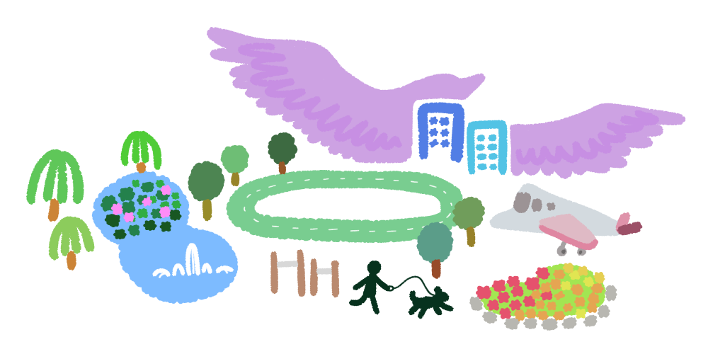

보라매공원 퀴즈
보라매공원에 대하여
얼마나 많이 알고 있나요?

옛날 공군사관학교 자리에 공원이 지어져
공군사관학교 때의 상징인 보라매를
그대로 이름으로 사용하고 있어요.
주요시설로는 잔디광장, 에어파크, 연못,
운동장, 배드민턴장, 암벽등반대 등이 있고
맨발공원 등 휴양 시설도 구비되어 있어요.
공원 내에는 장애인 복지관, 구민 회관 등
11개 기관이 입주하고 있답니다.
오늘은 보라매공원 달리기 트랙에서
걷거나 달리기를 해보면 어떨까요? 🏃🏻♀️